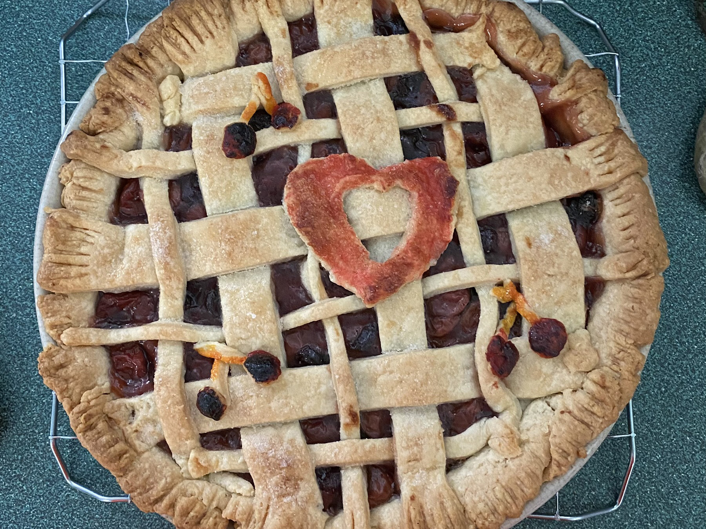

Perfect Sour Cherry Pie

Description
A sweet filling perfect for summer. Definitely invest in a cherry pitter for this one!
Ingredients
2 (15 ounce) packages double crust ready-to-use pie crust
2 pounds sour cherries, pitted
1 cup white sugar
2 tablespoons white sugar
3 ½ tablespoons cornstarch
1 tablespoon butter
¼ teaspoon almond extract
Directions
- Preheat oven to 375 degrees F (190 degrees C). Press the bottom pie crusts into 2 pie pans.
- Combine cherries, 1 cup plus 2 tablespoons sugar, and cornstarch in a saucepan. Let sit until sugar begins to draw out the cherries' juices, about 10 minutes. Bring to boil, stirring constantly. Lower the heat; simmer until the juices thicken and become translucent, about 5 minutes. Remove from heat; stir in butter and almond extract until well mixed. Pour into the bottom half of the pie shells. Cover with top crusts, crimp the edges to seal, and cut vents into the top with a sharp knife.
- Bake in the preheated oven until crust is golden brown, 45 to 55 minutes.